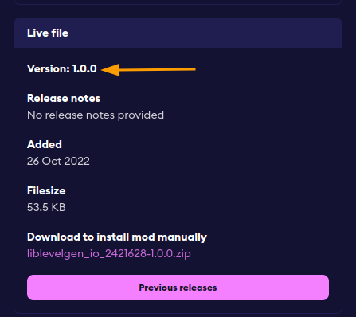
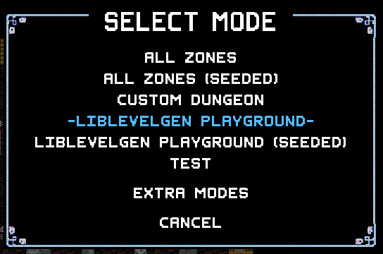
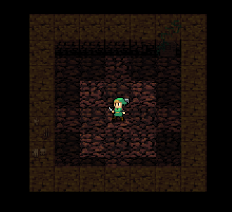

02. The basics¶
To get started, you need to install LibLevelGen (perhaps unsuprisingly). It's available on mod.io and through the in-game mod browser.
Setting up a mod for testing¶
Once you have it, you can create a new mod that we'll use for testing (the one used throughout the tutorial will be called LibLevelGen Playground).
I also recommend adding LibLevelGen_io_2421628 as a depencency like so:
{
"namespace": "LibLevelGenPlayground",
"displayName": "LibLevelGen Playground",
"version": "1.0.0",
"description": "No description given.",
"author": "You",
"dependencies": {
"LibLevelGen_io_2421628": "1.0.0"
},
"api": {"scriptPath":""},
"icon": "LibLevelGenPlaygroundIcon.png",
"banner": "LibLevelGenPlaygroundBanner.png",
"tags": [],
"name": "LibLevelGenPlayground"
}

(It's a bit inconvenient right now, but in the feature Synchrony will allow automatically getting the latest available version, and this page will be edited accordingly)
Of course, if you don't want to do that, you can just load LibLevelGen manually. But once you decide to release your mod, it's something you should do to prevent other people from running into errors caused by LibLevelGen not being loaded.
Generating the first level¶
With all that done, we're finally ready to generate our first level! Now, because LibLevelGen is quite isolated from the rest of the game it's mostly self-contained, so you don't need a ton of requires. For now, we'll actually use just one:
local libLevelGen = require "LibLevelGen.LibLevelGen"
local function myGenerator(genParams)
end
libLevelGen.registerGenerator("LibLevelGen Playground", myGenerator)

If we select it now, umm... Well, we get a nice black screen, because we haven't actually generated a level inside of the
myGenerator function. Let's go ahead and do that real quick:
local function myGenerator(genParams)
-- Create a new instance, which will hold all the things
-- related to the generated level.
-- We give it the genParams argument - its type is LibLevelGen.LevelGenerationEventParameters
-- (http://priw8.github.io/liblevelgen-doc/modules/LibLevelGen.lua/#liblevelgenlevelgenerationeventparameters)
-- This argument is used to adjust certain properties of the level.
local instance = libLevelGen.new(genParams)
-- To place the initial starting room, we need a segment.
-- As mentioned earlier, segments are isolated collections of rooms.
local mainSegment = instance:createSegment()
-- Finally, we can create the starting room. There's a nice helper
-- method for that, which makes sure that our room ends up
-- where the player spawns!
mainSegment:createStartingRoom()
-- Once we're done with generating the level,
-- we need to call the finalize method.
instance:finalize()
end

cricket noises
Making things a bit easier¶
Now, when you spawned you likely couldn't see the entire level because it's heckin' dark in there (unless your character had a torch). For testing level generation, I recommend having a character that can move with fixed beat and starts with a map. I actually made a mod just for that: DebugBard.
It's also advised to set the level restart hotkey to something easy to access, because you'll be using it. Like a lot. My personal preference is the [Space] key.
Failmaps¶
Note: in the section below, I mention getting an error message. In the current version of the game, errors in the levelGenerate event only produce an error in the log file. This will be changed to give your favourite red text on the screen in the next version.
Now, suppose we did something sad in our generator that causes an error, like calling createSegmen instead of createSegment. If we try to start a level like that, we get an interesting error message: Failmap limit exceeded. What does that mean?
It's actually quite simple - LibLevelGen generators are allowed to fail, up to 100 times in a row. These failures are called "failmaps", and they are there to help fight rare edge cases where level might generate successfuly 99.9% of the time but there's that one weird situation when it fails. Instead of identifying it, we can just pretend it doesn't exist and try again (which is probably not the best advice for programming in general, but I find it a valid strategy for level generation. The base game actually has failmaps too!).
However, this behaviour is generally not desirable when actually making the generator. This is why you can disable it in the settings: Options -> Mod Options -> LibLevelGen. With failmap retry disabled, we get the actual error: attempt to call method createSegmen (a nil value).
That's everything for now. In the next part, you'll learn how to make a level that resembles a level a bit more!